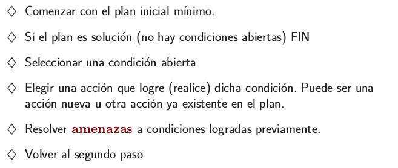
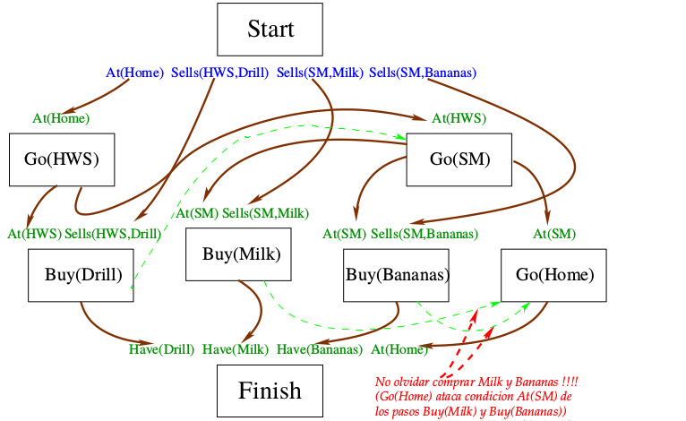

Inteligencia Artificial
Claudio Vaucheret
Planificación: POP
Created: 2023-11-16 jue 17:22
Table of Contents
Repaso
¿Qué vimos?
- Representación de las acciones: STRIPS, Situation Calculus, Event Calculus
- Problemas en la representación del Cambio: Frame, Ramification y Qualification
- Regresión
HOY Algoritmos de Planificación: Planificador de Orden Parcial
Planificación de Orden Parcial
Planificación de Orden Parcial
- Los planificadores dados dan como resultado un plan totalmente ordenado.
- No utilizan las ventajas de la descomposición del problema.
- Al utilizar un orden parcial entre acciones sólo se compromete un orden sobre las acciones cuando realmente fuere necesario.
Back to Matemática Discreta :)
¿Qué es un orden parcial?
Es una relación de orden reflexiva, antisimétrica y transitiva.
¿y un orden parcial estricto?
Un orden parcial estricto es irreflexivo, transitivo y asimétrico.
Utilizaremos para el orden parcial la relación antes que, que es irreflexiva, asimétrica y transitiva, es decir es un orden parcial estricto.
Back to the future: IA
- Planificación de Orden Parcial
- un conjunto de acciones junto con un orden parcial, representando la relación antes que sobre acciones,
- cualquier orden total sobre las acciones, consistente con el orden parcial, resuelve la meta desde el nodo inicial
Si tenemos el siguiente orden parcial entre las acciones:
- \(a_1 < a_2\) \(a_3 < a_4\)
- los siguientes órdenes totales son consistentes con el orden parcial anterior:
- \(a_1 < a_2 < a_3 < a_4\) , \(a_3 < a_4 < a_1 < a_2\)
- \(a_3 < a_1 < a_4 < a_2\) , \(a_1 < a_3 < a_4 < a_2\)
Zapatos y Medias
- Zapatos y Medias
- Supongamos que quiero ponerme los zapatos y las medias en ambos pies. Hagamos un plan para esto.
- Una solución:
MediaIzq- MediaDer-ZapDer-ZapIzq
¿Otra solución?
Zapatos y Medias
- Orden Parcial
- MedDer \(<\) ZapDer
- MedIzq \(<\) ZapIzq
- Cualquier orden total consistente con este orden parcial estricto es solución al problema.
Orden entre las Acciones
- \(A_0 < A_1\)
- La acción \(A_0\) está antes que \(A_1\) en el orden parcial.
- La acción \(A_0\) ocurrió antes que \(A_1\).
- ¡Atención!
- \(A_0\) no es necesario que esté inmediatamente antes que \(A_1\)
Acciones Especiales
- START
- Es una acción que alcanza las relaciones que son verdaderas en el estado inicial. Sin precondición y su efecto es agregar los fluentes que son Verdaderos en el estado inicial.
- FINISH
- Es una acción cuyas precondiciones son las metas a ser resueltas y no tiene efecto.
- Son acciones que sirven al momento de construir el plan como límites.
- Cuando se ejecuta el plan START y FINISH son ignorados.
Acciones Especiales
Para toda acción \(A\) se cumple que:
\[START< A\] \[A< FINISH\] \[START< FINISH\]
Enlace Causal
Para cada precondición \(P\) de la acción \(A_1\) tenemos asociada una acción \(A_0\):

\[A_0\ <\ A_1\]
Enlace Causal
Cada acción \(A\) que borre a \(P\) tiene que estar antes de \(A_0\) o después de \(A_1\):

\[A_0\ <\ A_1\ <\ A\] o bien
\[A\ <\ A_0\ <\ A_1\]
Enlace Causal
- Enlace Causal
- Es un término de la forma \(cl(A_0,P,A_1)\) donde
\(A_0\) y \(A_1\) son acciones y \(P\) es un fluente. \(P\) es una
precondición de la acción \(A_1\). La acción \(A_0\) logra \(P\). \(P\)
está soportado por la acción \(A_0\).
- Es un término de la forma \(cl(A_0,P,A_1)\) donde
\(A_0\) y \(A_1\) son acciones y \(P\) es un fluente. \(P\) es una
precondición de la acción \(A_1\). La acción \(A_0\) logra \(P\). \(P\)
está soportado por la acción \(A_0\).
- Amenaza
- Una acción \(A\) amenaza un enlace causal \(cl(A_0,P,A_1)\) si la acción \(A\) borra la proposición \(P\).
Amenaza del enlace causal
- Amenaza
- Una acción \(A\) amenaza un enlace causal \(cl(A_0,P,A_1)\) si la acción \(A\) borra la proposición \(P\).
Para resolver las amenazas, se añaden restricciones de orden: Nos aseguramos de que la acción que amenaza (s3) no interviene en el enlace causal (de s1 a s2)
Amenaza del enlace causal
- Dos formas de resolver amenazas:
- Degradación: La acción que amenaza se realiza antes del vínculo causal.
- Ascenso: La acción que amenaza se realiza después del vínculo causal.
Amenaza del enlace causal


Amenaza del enlace causal
- Estas amenazas no se pueden resolver directamente (las dos acciones se amenazan mutuamente y ningún orden permite resolverlas).
Amenaza del enlace causal

Plan de Orden Parcial
- Plan Parcial
- Un plan parcial es un término de la forma \(plan(As,Os,Ls)\), donde \(As\) es una lista de acciones, \(Os\) es un orden parcial sobre acciones y \(Ls\) es una lista de enlaces causales.
- Plan Seguro
- El plan es seguro si para toda acción \(A\in As\) que amenaza a \(cl(A_0,P,A_1)\in Ls\) , el orden parcial \(Os\) deriva que \(A< A_0\) o \(A_1 < A\).
Plan de Orden Parcial
- Agenda
- Una agenda es un conjunto de submetas para cada precondición no soportada de todas las metas en \(As\).
- Submeta
- Una submeta es un término de la forma goal(P,A), donde \(P\) es una proposición atómica que es una precondición para la acción \(A\).
- Plan Completo
- Un plan completo es un plan parcial seguro con una agenda vacía.
Planificador de Orden Parcial
Planificador de Orden Parcial

Planificador de Orden Parcial
Planificador de Orden Parcial

Planificador de Orden Parcial

Planificador de Orden Parcial

Planificador de Orden Parcial

Planificador de Orden Parcial

Ejemplo

Ejemplo
Ejemplo
Ejemplo

Ejemplo

Ejemplo
Ejemplo

Ejemplo

Ejemplo

Ejemplo

Ejemplo

Ejemplo

Ejemplo

Ejemplo

Ejemplo

Ejemplo
Ejemplo

Ejemplo

Ejemplo

Ejemplo

Ejemplo
Ejemplo